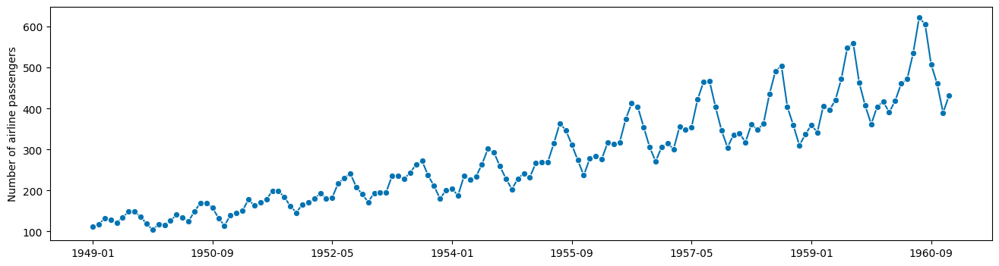
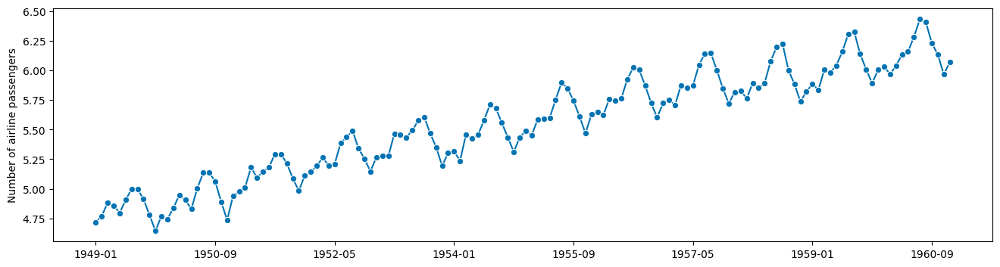
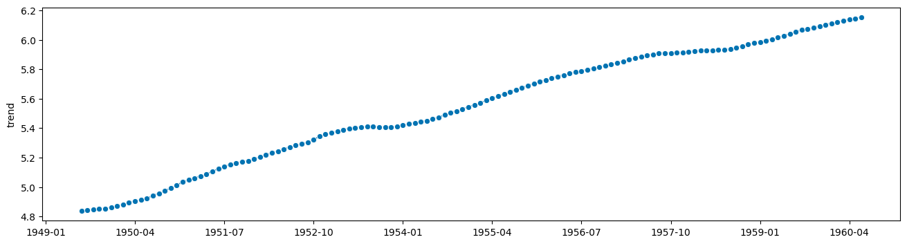
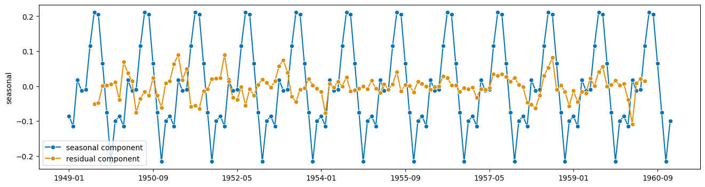
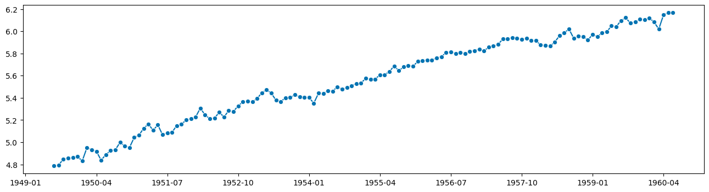
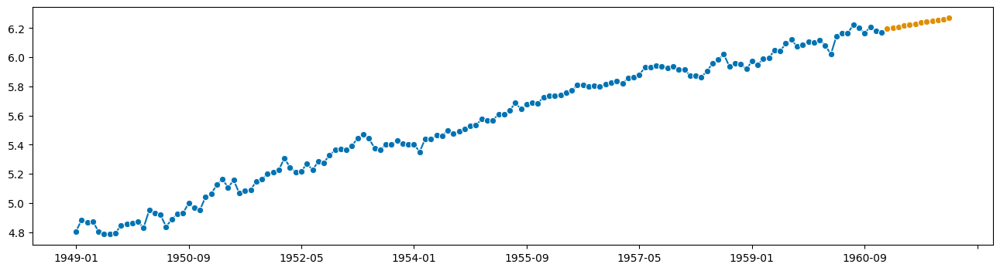
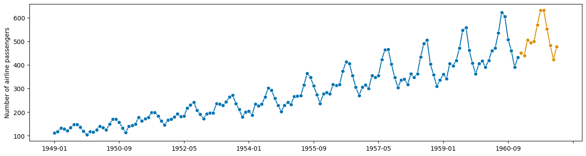
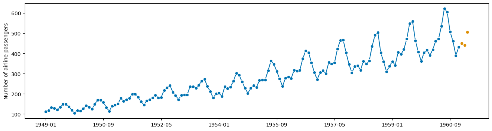

Overview of this notebook#
why transformers? transformers in
sktimetransformers = modular data processing steps
simple pipeline example & transformer explained
overview of transformer features
types of transformers - input types, output types
broadcasting/vectorization to panel, hierarchical, multivariate
searching for transformers using
all_estimators
[1]:
import warnings
warnings.filterwarnings("ignore")
Table of Contents#
3. Transformers in sktime
3.1 Wherefore transformers?
3.2 Transformers - interface and features
3.2.1 What are transformers?
3.2.2 Different types of transformers
3.2.3 Broadcasting aka vectorization of transformers
3.2.4 Transformers as pipeline components
3.3 Combining transformers, feature engineering
3.4 Technical details - transformer types and signatures
3.5 Extension guide
3.6 Summary
3. Transformers in sktime#
3.1 Wherefore transformers?#
or: why sktime transformers will improve your life!
(disclaimer: not the same product as deep learning transformers)
suppose we want to forecast this well-known dataset (airline passengers by year in a fixed scope)
[2]:
from sktime.datasets import load_airline
from sktime.utils.plotting import plot_series
y = load_airline()
plot_series(y)
[2]:
(<Figure size 1600x400 with 1 Axes>,
<AxesSubplot: ylabel='Number of airline passengers'>)

observations:
there is seasonal periodicity, 12 month period
seasonal periodicity looks multiplicative (not additive) to trend
idea: forecast might be easier
with seasonality removed
on logarithmic value scale (multiplication becomes addition)
Naive approach - don’t do this at home!#
Maybe doing this manually step by step is a good idea?
[3]:
import numpy as np
# compute the logarithm
logy = np.log(y)
plot_series(logy)
[3]:
(<Figure size 1600x400 with 1 Axes>,
<AxesSubplot: ylabel='Number of airline passengers'>)

this looks additive now!
ok, what next - deaseasonalization
[4]:
from statsmodels.tsa.seasonal import seasonal_decompose
# apply this to y
# wait no, to logy
seasonal_result = seasonal_decompose(logy, period=12)
trend = seasonal_result.trend
resid = seasonal_result.resid
seasonal = seasonal_result.seasonal
[5]:
plot_series(trend)
[5]:
(<Figure size 1600x400 with 1 Axes>, <AxesSubplot: ylabel='trend'>)

[6]:
plot_series(seasonal, resid, labels=["seasonal component", "residual component"])
[6]:
(<Figure size 1600x400 with 1 Axes>, <AxesSubplot: ylabel='seasonal'>)

ok, now the forecast!
… of what ??
ah yes, residual plus trend, because seasonal just repeats itself
[7]:
# forecast this:
plot_series(trend + resid)
[7]:
(<Figure size 1600x400 with 1 Axes>, <AxesSubplot: >)

[8]:
# this has nans??
trend
[8]:
1949-01 NaN
1949-02 NaN
1949-03 NaN
1949-04 NaN
1949-05 NaN
..
1960-08 NaN
1960-09 NaN
1960-10 NaN
1960-11 NaN
1960-12 NaN
Freq: M, Name: trend, Length: 144, dtype: float64
[9]:
# ok, forecast this instead then:
y_to_forecast = logy - seasonal
# phew, no nans!
y_to_forecast
[9]:
1949-01 4.804314
1949-02 4.885097
1949-03 4.864689
1949-04 4.872858
1949-05 4.804757
...
1960-08 6.202368
1960-09 6.165645
1960-10 6.208669
1960-11 6.181992
1960-12 6.168741
Freq: M, Length: 144, dtype: float64
[10]:
from sktime.forecasting.trend import PolynomialTrendForecaster
f = PolynomialTrendForecaster(degree=2)
f.fit(y_to_forecast, fh=list(range(1, 13)))
y_fcst = f.predict()
plot_series(y_to_forecast, y_fcst)
[10]:
(<Figure size 1600x400 with 1 Axes>, <AxesSubplot: >)

looks reasonable!
Now to turn this into a forecast of the original y …
add seasonal
invert the logarithm
[11]:
y_fcst
[11]:
1961-01 6.195931
1961-02 6.202857
1961-03 6.209740
1961-04 6.216580
1961-05 6.223378
1961-06 6.230132
1961-07 6.236843
1961-08 6.243512
1961-09 6.250137
1961-10 6.256719
1961-11 6.263259
1961-12 6.269755
Freq: M, dtype: float64
[12]:
y_fcst_orig = y_fcst + seasonal[0:12]
y_fcst_orig_orig = np.exp(y_fcst_orig)
y_fcst_orig_orig
[12]:
1949-01 NaN
1949-02 NaN
1949-03 NaN
1949-04 NaN
1949-05 NaN
1949-06 NaN
1949-07 NaN
1949-08 NaN
1949-09 NaN
1949-10 NaN
1949-11 NaN
1949-12 NaN
1961-01 NaN
1961-02 NaN
1961-03 NaN
1961-04 NaN
1961-05 NaN
1961-06 NaN
1961-07 NaN
1961-08 NaN
1961-09 NaN
1961-10 NaN
1961-11 NaN
1961-12 NaN
Freq: M, dtype: float64
ok, that did not work. Something something pandas indices??
[13]:
y_fcst_orig = y_fcst + seasonal[0:12].values
y_fcst_orig_orig = np.exp(y_fcst_orig)
plot_series(y, y_fcst_orig_orig)
[13]:
(<Figure size 1600x400 with 1 Axes>,
<AxesSubplot: ylabel='Number of airline passengers'>)

ok, done! and it only took us 10 years.
Maybe there is a better way?
Slightly less naive approach - use sktime transformers (badly)#
Ok, surely there is a way where I don’t have to fiddle with wildly varying interfaces of every step.
Solution: use transformers!
Same interface at every step!
[14]:
from sktime.forecasting.trend import PolynomialTrendForecaster
from sktime.transformations.series.boxcox import LogTransformer
from sktime.transformations.series.detrend import Deseasonalizer
y = load_airline()
t_log = LogTransformer()
ylog = t_log.fit_transform(y)
t_deseason = Deseasonalizer(sp=12)
y_deseason = t_deseason.fit_transform(ylog)
f = PolynomialTrendForecaster(degree=2)
f.fit(y_deseason, fh=list(range(1, 13)))
y_fcst = f.predict()
hm, but now we need to invert the transformations…
fortunately transformers have an inverse transform, standard interface point
[15]:
y_fcst_orig = t_deseason.inverse_transform(y_fcst)
# the deseasonalizer remembered the seasonality component! nice!
y_fcst_orig_orig = t_log.inverse_transform(y_fcst_orig)
plot_series(y, y_fcst_orig_orig)
[15]:
(<Figure size 1600x400 with 1 Axes>,
<AxesSubplot: ylabel='Number of airline passengers'>)

Expert approach - use sktime transformers with pipelines!#
Bragging rights included.
[16]:
from sktime.forecasting.trend import PolynomialTrendForecaster
from sktime.transformations.series.boxcox import LogTransformer
from sktime.transformations.series.detrend import Deseasonalizer
y = load_airline()
f = LogTransformer() * Deseasonalizer(sp=12) * PolynomialTrendForecaster(degree=2)
f.fit(y, fh=list(range(1, 13)))
y_fcst = f.predict()
plot_series(y, y_fcst)
[16]:
(<Figure size 1600x400 with 1 Axes>,
<AxesSubplot: ylabel='Number of airline passengers'>)

what happened here?
The “chain” operator * creates a “forecasting pipeline”
Has the same interface as all other forecasters! No additional data fiddling!
Transformers “slot in” as standardized components.
[17]:
f
[17]:
TransformedTargetForecaster(steps=[LogTransformer(), Deseasonalizer(sp=12),
PolynomialTrendForecaster(degree=2)])In a Jupyter environment, please rerun this cell to show the HTML representation or trust the notebook. On GitHub, the HTML representation is unable to render, please try loading this page with nbviewer.org.
TransformedTargetForecaster(steps=[LogTransformer(), Deseasonalizer(sp=12),
PolynomialTrendForecaster(degree=2)])Let’s look at this in more detail:
sktimetransformers interfacesktimepipeline building
3.2 Transformers - interface and features#
transformer interface
transformer types
searching transformers by type
broadcasting/vectorization to panel & hierarchical data
transformers and pipelines
3.2.1 What are transformers?#
Transformer = modular data processing steps commonly used in machine learning
(“transformer” used in the sense of scikit-learn)
Transformers are estimators that:
are fitted to a batch of data via
fit(data), changing its stateare applied to another batch of data via
transform(X), producing transformed datamay have an
inverse_transform(X)
In sktime, input X to fit and transform is typically a time series or a panel (collection of time series).
Basic use of an sktime time series transformer is as follows:
[18]:
# 1. prepare the data
from sktime.utils._testing.series import _make_series
X = _make_series()
X_train = X[:7]
X_test = X[7:12]
# X_train and X_test are both pandas.Series
X_train, X_test
[18]:
(2000-01-01 4.708975
2000-01-02 1.803052
2000-01-03 2.403074
2000-01-04 3.076577
2000-01-05 2.902616
2000-01-06 3.831219
2000-01-07 2.121627
Freq: D, dtype: float64,
2000-01-08 4.858755
2000-01-09 3.460329
2000-01-10 2.280978
2000-01-11 1.930733
2000-01-12 4.604839
Freq: D, dtype: float64)
[19]:
# 2. construct the transformer
from sktime.transformations.series.boxcox import BoxCoxTransformer
# trafo is an sktime estimator inheriting from BaseTransformer
# Box-Cox transform with lambda parameter fitted via mle
trafo = BoxCoxTransformer(method="mle")
[20]:
# 3. fit the transformer to training data
trafo.fit(X_train)
# 4. apply the transformer to transform test data
# Box-Cox transform with lambda fitted on X_train
X_transformed = trafo.transform(X_test)
X_transformed
[20]:
2000-01-08 1.242107
2000-01-09 1.025417
2000-01-10 0.725243
2000-01-11 0.593567
2000-01-12 1.209380
Freq: D, dtype: float64
If the training and test set is the same, step 3 and 4 can be carried out more concisely (and sometimes more efficiently) by using fit_transform:
[21]:
# 3+4. apply the transformer to fit and transform on the same data, X
X_transformed = trafo.fit_transform(X)
3.2.2 Different types of transformers#
sktime distinguishes different types of transformer, depending on the input type of fit and transform, and the output type of transform.
Transformers differ by:
making use of an additional
yargument infitortransformwhether the input to
fitandtransformis a single time series, a collection of time series, or scalar values (data frame row)whether the output of
transformis a single time series, a collection of time series, or scalar values (data frame row)whether the input to
fitandtransformare one object or two. Two objects as input and a scalar output means the transformer is a distance or kernel function.
More detail on this is given in the glossary (section 2.3).
To illustrate the difference, we compare two transformers with different output:
the Box-Cox transformer
BoxCoxTrannsformer, which transforms a time series to a time seriesthe summary transformer
SummaryTransformer, which transforms a time series to scalars such as the mean
[22]:
# constructing the transformer
from sktime.transformations.series.boxcox import BoxCoxTransformer
from sktime.transformations.series.summarize import SummaryTransformer
from sktime.utils._testing.series import _make_series
# getting some data
# this is one pandas.Series
X = _make_series(n_timepoints=10)
# constructing the transformers
boxcox_trafo = BoxCoxTransformer(method="mle")
summary_trafo = SummaryTransformer()
[23]:
# this produces a pandas Series
boxcox_trafo.fit_transform(X)
[23]:
2000-01-01 3.217236
2000-01-02 6.125564
2000-01-03 5.264381
2000-01-04 3.811121
2000-01-05 1.966839
2000-01-06 2.621609
2000-01-07 3.851400
2000-01-08 3.199416
2000-01-09 0.000000
2000-01-10 6.629380
Freq: D, dtype: float64
[24]:
# this produces a pandas.DataFrame row
summary_trafo.fit_transform(X)
[24]:
| mean | std | min | max | 0.1 | 0.25 | 0.5 | 0.75 | 0.9 | |
|---|---|---|---|---|---|---|---|---|---|
| 0 | 3.368131 | 1.128705 | 1.0 | 4.881081 | 2.339681 | 2.963718 | 3.376426 | 4.0816 | 4.67824 |
For time series transformers, the metadata tags describe the expected output of transform:
[25]:
boxcox_trafo.get_tag("scitype:transform-output")
[25]:
'Series'
[26]:
summary_trafo.get_tag("scitype:transform-output")
[26]:
'Primitives'
To find transformers, use all_estimators and filter by tags:
"scitype:transform-output"- the output scitype.Seriesfor time series,Primitivesfor primitive features (float, categories),Panelfor collections of time series."scitype:transform-input"- the input scitype.Seriesfor time series."scitype:instancewise"- IfTrue, vectorized operation per series. IfFalse, uses multiple time series non-trivially.
Example: find all transformers that output time series
[27]:
from sktime.registry import all_estimators
# now subset to transformers that extract scalar features
all_estimators(
"transformer",
as_dataframe=True,
filter_tags={"scitype:transform-output": "Series"},
)
Importing plotly failed. Interactive plots will not work.
[27]:
| name | estimator | |
|---|---|---|
| 0 | Aggregator | <class 'sktime.transformations.hierarchical.ag... |
| 1 | AutoCorrelationTransformer | <class 'sktime.transformations.series.acf.Auto... |
| 2 | BoxCoxTransformer | <class 'sktime.transformations.series.boxcox.B... |
| 3 | ClaSPTransformer | <class 'sktime.transformations.series.clasp.Cl... |
| 4 | ClearSky | <class 'sktime.transformations.series.clear_sk... |
| ... | ... | ... |
| 69 | TransformerPipeline | <class 'sktime.transformations.compose.Transfo... |
| 70 | TruncationTransformer | <class 'sktime.transformations.panel.truncatio... |
| 71 | WhiteNoiseAugmenter | <class 'sktime.transformations.series.augmente... |
| 72 | WindowSummarizer | <class 'sktime.transformations.series.summariz... |
| 73 | YtoX | <class 'sktime.transformations.compose.YtoX'> |
74 rows × 2 columns
A more complete overview on transformer types and tags is given in the sktime transformers tutorial.
3.2.3 Broadcasting aka vectorization of transformers#
sktime transformers may be natively univariate, or apply only to a single time series.
Even if this is the case, they broadcast across variables and instances of time series, where applicable (also known as vectorization in numpy parlance).
This ensures that all sktime transformers can be applied to multivariate and multi-instance (panel, hierarchical) time series data.
Example 1: broadcasting/vectorization of time series to time series transformer
The BoxCoxTransformer from previous sections applies to single instances of univariate time series. When multiple instances or variables are seen, it broadcasts across both:
[28]:
from sktime.transformations.series.boxcox import BoxCoxTransformer
from sktime.utils._testing.hierarchical import _make_hierarchical
# hierarchical data with 2 variables and 2 levels
X = _make_hierarchical(n_columns=2)
X
[28]:
| c0 | c1 | |||
|---|---|---|---|---|
| h0 | h1 | time | ||
| h0_0 | h1_0 | 2000-01-01 | 3.068024 | 3.177475 |
| 2000-01-02 | 2.917533 | 3.615065 | ||
| 2000-01-03 | 3.654595 | 3.327944 | ||
| 2000-01-04 | 2.848652 | 4.694433 | ||
| 2000-01-05 | 3.458690 | 3.349914 | ||
| ... | ... | ... | ... | ... |
| h0_1 | h1_3 | 2000-01-08 | 4.056444 | 3.726508 |
| 2000-01-09 | 2.462253 | 3.938115 | ||
| 2000-01-10 | 2.689640 | 1.000000 | ||
| 2000-01-11 | 1.233706 | 3.999155 | ||
| 2000-01-12 | 3.101318 | 3.632666 |
96 rows × 2 columns
[29]:
# constructing the transformers
boxcox_trafo = BoxCoxTransformer(method="mle")
# applying to X results in hierarchical data
boxcox_trafo.fit_transform(X)
[29]:
| c0 | c1 | |||
|---|---|---|---|---|
| h0 | h1 | time | ||
| h0_0 | h1_0 | 2000-01-01 | 0.307301 | 3.456645 |
| 2000-01-02 | 0.305723 | 4.416187 | ||
| 2000-01-03 | 0.311191 | 3.777609 | ||
| 2000-01-04 | 0.304881 | 7.108861 | ||
| 2000-01-05 | 0.310189 | 3.825267 | ||
| ... | ... | ... | ... | ... |
| h0_1 | h1_3 | 2000-01-08 | 1.884165 | 9.828613 |
| 2000-01-09 | 1.087370 | 11.311330 | ||
| 2000-01-10 | 1.216886 | 0.000000 | ||
| 2000-01-11 | 0.219210 | 11.761224 | ||
| 2000-01-12 | 1.435712 | 9.208733 |
96 rows × 2 columns
Fitted model components of vectorized transformers can be found in the transformers_ attribute, or accessed via the universal get_fitted_params interface:
[30]:
boxcox_trafo.transformers_
# this is a pandas.DataFrame that contains the fitted transformers
# one per time series instance and variable
[30]:
| c0 | c1 | ||
|---|---|---|---|
| h0 | h1 | ||
| h0_0 | h1_0 | BoxCoxTransformer() | BoxCoxTransformer() |
| h1_1 | BoxCoxTransformer() | BoxCoxTransformer() | |
| h1_2 | BoxCoxTransformer() | BoxCoxTransformer() | |
| h1_3 | BoxCoxTransformer() | BoxCoxTransformer() | |
| h0_1 | h1_0 | BoxCoxTransformer() | BoxCoxTransformer() |
| h1_1 | BoxCoxTransformer() | BoxCoxTransformer() | |
| h1_2 | BoxCoxTransformer() | BoxCoxTransformer() | |
| h1_3 | BoxCoxTransformer() | BoxCoxTransformer() |
[31]:
boxcox_trafo.get_fitted_params()
# this returns a dictionary
# the transformers DataFrame is available at the key "transformers"
# individual transformers are available at dataframe-like keys
# it also contains all fitted lambdas as keyed parameters
[31]:
{'transformers': c0 c1
h0 h1
h0_0 h1_0 BoxCoxTransformer() BoxCoxTransformer()
h1_1 BoxCoxTransformer() BoxCoxTransformer()
h1_2 BoxCoxTransformer() BoxCoxTransformer()
h1_3 BoxCoxTransformer() BoxCoxTransformer()
h0_1 h1_0 BoxCoxTransformer() BoxCoxTransformer()
h1_1 BoxCoxTransformer() BoxCoxTransformer()
h1_2 BoxCoxTransformer() BoxCoxTransformer()
h1_3 BoxCoxTransformer() BoxCoxTransformer(),
"transformers.loc[('h0_0', 'h1_0'),c0]": BoxCoxTransformer(),
"transformers.loc[('h0_0', 'h1_0'),c0]__lambda": -3.1599525634239187,
"transformers.loc[('h0_0', 'h1_1'),c1]": BoxCoxTransformer(),
"transformers.loc[('h0_0', 'h1_1'),c1]__lambda": 0.37511296223989965}
Example 2: broadcasting/vectorization of time series to scalar features transformer
The SummaryTransformer behaves similarly. Multiple time series instances are transformed to different columns of the resulting data frame.
[32]:
from sktime.transformations.series.summarize import SummaryTransformer
summary_trafo = SummaryTransformer()
# this produces a pandas DataFrame with more rows and columns
# rows correspond to different instances in X
# columns are multiplied and names prefixed by [variablename]__
# there is one column per variable and transformed feature
summary_trafo.fit_transform(X)
[32]:
| c0__mean | c0__std | c0__min | c0__max | c0__0.1 | c0__0.25 | c0__0.5 | c0__0.75 | c0__0.9 | c1__mean | c1__std | c1__min | c1__max | c1__0.1 | c1__0.25 | c1__0.5 | c1__0.75 | c1__0.9 | ||
|---|---|---|---|---|---|---|---|---|---|---|---|---|---|---|---|---|---|---|---|
| h0 | h1 | ||||||||||||||||||
| h0_0 | h1_0 | 3.202174 | 0.732349 | 2.498101 | 5.283440 | 2.709206 | 2.834797 | 2.975883 | 3.348140 | 3.635005 | 3.360042 | 0.744295 | 1.910203 | 4.694433 | 2.278782 | 3.194950 | 3.377147 | 3.722876 | 3.981182 |
| h1_1 | 2.594633 | 0.850142 | 1.000000 | 4.040674 | 1.618444 | 1.988190 | 2.742309 | 3.084133 | 3.349082 | 3.637274 | 1.006419 | 2.376048 | 5.112509 | 2.402845 | 2.703573 | 3.644124 | 4.535796 | 4.873311 | |
| h1_2 | 3.649374 | 1.181054 | 1.422356 | 5.359634 | 2.249409 | 2.881057 | 3.813969 | 4.319322 | 5.021987 | 2.945555 | 1.245355 | 1.684464 | 6.469536 | 1.795508 | 2.324243 | 2.757053 | 3.159779 | 3.547420 | |
| h1_3 | 2.865339 | 0.745604 | 1.654998 | 4.718420 | 2.313490 | 2.477173 | 2.839630 | 3.137472 | 3.372838 | 3.394633 | 0.971250 | 1.866518 | 5.236633 | 2.506371 | 2.653524 | 3.259750 | 4.192159 | 4.419325 | |
| h0_1 | h1_0 | 2.946692 | 1.025167 | 1.085568 | 5.159135 | 1.933525 | 2.375844 | 2.952310 | 3.412478 | 3.687086 | 3.203431 | 0.970914 | 1.554428 | 4.546142 | 1.756260 | 2.405147 | 3.544128 | 3.954901 | 4.046171 |
| h1_1 | 3.274710 | 0.883594 | 1.930773 | 4.771649 | 1.988411 | 2.710401 | 3.434244 | 3.799033 | 4.167242 | 3.116279 | 0.604060 | 2.235531 | 4.167924 | 2.426392 | 2.655720 | 3.079178 | 3.660901 | 3.762036 | |
| h1_2 | 3.397527 | 0.630344 | 2.277090 | 4.571272 | 2.791987 | 2.965040 | 3.457581 | 3.783002 | 4.031893 | 3.297039 | 0.938834 | 1.826276 | 4.919249 | 2.292343 | 2.646870 | 3.139703 | 3.975298 | 4.365553 | |
| h1_3 | 3.356722 | 1.326547 | 1.233706 | 5.505544 | 2.467667 | 2.567089 | 2.884737 | 4.308726 | 5.273261 | 3.232578 | 1.003957 | 1.000000 | 4.234051 | 2.113028 | 2.568151 | 3.659943 | 3.953375 | 4.022143 |
3.2.4 Transformers as pipeline components#
sktime transformers can be pipelined with any other sktime estimator type, including forecasters, classifiers, and other transformers.
Pipelines = estimators of the same type, same interface as specialized class
pipeline build operation: make_pipeline or via * dunder
Pipelining pipe = trafo * est produces pipe of same type as est.
In pipe.fit, first trafo.fit_transform, then est.fit is executed on the result.
In pipe.predict, first trafo.transform, then est.predict is executed.
(the arguments that are piped differ by type and can be looked up in the docstrings of pipeline classes, or specialized tutorials)
we have seen this example above
[33]:
from sktime.forecasting.trend import PolynomialTrendForecaster
from sktime.transformations.series.boxcox import LogTransformer
from sktime.transformations.series.detrend import Deseasonalizer
y = load_airline()
pipe = LogTransformer() * Deseasonalizer(sp=12) * PolynomialTrendForecaster(degree=2)
pipe
[33]:
TransformedTargetForecaster(steps=[LogTransformer(), Deseasonalizer(sp=12),
PolynomialTrendForecaster(degree=2)])In a Jupyter environment, please rerun this cell to show the HTML representation or trust the notebook. On GitHub, the HTML representation is unable to render, please try loading this page with nbviewer.org.
TransformedTargetForecaster(steps=[LogTransformer(), Deseasonalizer(sp=12),
PolynomialTrendForecaster(degree=2)])[34]:
# this is a forecaster with the same interface as Polynomial Trend Forecaster
pipe.fit(y, fh=[1, 2, 3])
y_pred = pipe.predict()
plot_series(y, y_pred)
[34]:
(<Figure size 1600x400 with 1 Axes>,
<AxesSubplot: ylabel='Number of airline passengers'>)

works the same with classifiers or other estimator types!
[35]:
from sktime.classification.distance_based import KNeighborsTimeSeriesClassifier
from sktime.transformations.series.exponent import ExponentTransformer
pipe = ExponentTransformer() * KNeighborsTimeSeriesClassifier()
# this constructs a ClassifierPipeline, which is also a classifier
pipe
[35]:
ClassifierPipeline(classifier=KNeighborsTimeSeriesClassifier(),
transformers=[ExponentTransformer()])In a Jupyter environment, please rerun this cell to show the HTML representation or trust the notebook. On GitHub, the HTML representation is unable to render, please try loading this page with nbviewer.org.
ClassifierPipeline(classifier=KNeighborsTimeSeriesClassifier(),
transformers=[ExponentTransformer()])KNeighborsTimeSeriesClassifier()
KNeighborsTimeSeriesClassifier()
[36]:
from sktime.datasets import load_unit_test
X_train, y_train = load_unit_test(split="TRAIN")
X_test, _ = load_unit_test(split="TEST")
# this is a forecaster with the same interface as knn-classifier
# first applies exponent transform, then knn-classifier
pipe.fit(X_train, y_train)
[36]:
ClassifierPipeline(classifier=KNeighborsTimeSeriesClassifier(),
transformers=[ExponentTransformer()])In a Jupyter environment, please rerun this cell to show the HTML representation or trust the notebook. On GitHub, the HTML representation is unable to render, please try loading this page with nbviewer.org.
ClassifierPipeline(classifier=KNeighborsTimeSeriesClassifier(),
transformers=[ExponentTransformer()])KNeighborsTimeSeriesClassifier()
KNeighborsTimeSeriesClassifier()
3.3 Combining transformers, feature engineering#
transformers are natural pipeline components
data processing steps
feature engineering steps
post processing steps
they can be combined in a number of other ways:
pipelining = sequential chaining
feature union = parallel, addition of features
feature subsetting = selecting columns
inversion = switch transform and inverse
multiplexing = switching between transformers
passthrough = switch on/ off
Chaining transformers via *#
[37]:
from sktime.transformations.series.difference import Differencer
from sktime.transformations.series.summarize import SummaryTransformer
pipe = Differencer() * SummaryTransformer()
# this constructs a TransformerPipeline, which is also a transformer
pipe
[37]:
TransformerPipeline(steps=[Differencer(), SummaryTransformer()])In a Jupyter environment, please rerun this cell to show the HTML representation or trust the notebook.
On GitHub, the HTML representation is unable to render, please try loading this page with nbviewer.org.
TransformerPipeline(steps=[Differencer(), SummaryTransformer()])
[38]:
from sktime.utils._testing.hierarchical import _bottom_hier_datagen
X = _bottom_hier_datagen(no_levels=1, no_bottom_nodes=2)
# this is a transformer with the same interface
# first applies differencer, then summary transform
pipe.fit_transform(X)
[38]:
| mean | std | min | max | 0.1 | 0.25 | 0.5 | 0.75 | 0.9 | |
|---|---|---|---|---|---|---|---|---|---|
| 0 | 2.222222 | 33.636569 | -101.0 | 87.00 | -37.700 | -16.000 | 3.50 | 22.25 | 43.000 |
| 1 | 48.111111 | 810.876526 | -2680.3 | 2416.86 | -826.462 | -323.145 | 76.33 | 448.86 | 1021.974 |
compatible with sklearn transformers!
default applies sklearn transformer per individual time series as a data frame table
[39]:
from sklearn.preprocessing import StandardScaler
pipe = Differencer() * StandardScaler()
pipe
[39]:
TransformerPipeline(steps=[Differencer(),
TabularToSeriesAdaptor(transformer=StandardScaler())])In a Jupyter environment, please rerun this cell to show the HTML representation or trust the notebook. On GitHub, the HTML representation is unable to render, please try loading this page with nbviewer.org.
TransformerPipeline(steps=[Differencer(),
TabularToSeriesAdaptor(transformer=StandardScaler())])[40]:
pipe.fit_transform(X)
[40]:
| passengers | ||
|---|---|---|
| l1_agg | timepoints | |
| l1_node01 | 1949-01 | -0.066296 |
| 1949-02 | 0.112704 | |
| 1949-03 | 0.351370 | |
| 1949-04 | -0.155796 | |
| 1949-05 | -0.304963 | |
| ... | ... | ... |
| l1_node02 | 1960-08 | -0.623659 |
| 1960-09 | -3.376512 | |
| 1960-10 | -1.565994 | |
| 1960-11 | -2.231567 | |
| 1960-12 | 1.210249 |
288 rows × 1 columns
pipeline-adaptor chains can be constructed manually:
sktime.transformations.compose.TransformerPipelinesktime.transformations.series.adapt.TabularToSeriesAdaptorforsklearn
composites are compatible with get_params / set_params parameter interface:
[41]:
pipe.get_params()
[41]:
{'steps': [Differencer(),
TabularToSeriesAdaptor(transformer=StandardScaler())],
'Differencer': Differencer(),
'TabularToSeriesAdaptor': TabularToSeriesAdaptor(transformer=StandardScaler()),
'Differencer__lags': 1,
'Differencer__memory': 'all',
'Differencer__na_handling': 'fill_zero',
'TabularToSeriesAdaptor__fit_in_transform': False,
'TabularToSeriesAdaptor__transformer__copy': True,
'TabularToSeriesAdaptor__transformer__with_mean': True,
'TabularToSeriesAdaptor__transformer__with_std': True,
'TabularToSeriesAdaptor__transformer': StandardScaler()}
Feature union via +#
[42]:
from sktime.transformations.series.difference import Differencer
from sktime.transformations.series.lag import Lag
pipe = Differencer() + Lag()
# this constructs a FeatureUnion, which is also a transformer
pipe
[42]:
FeatureUnion(transformer_list=[Differencer(), Lag()])In a Jupyter environment, please rerun this cell to show the HTML representation or trust the notebook.
On GitHub, the HTML representation is unable to render, please try loading this page with nbviewer.org.
FeatureUnion(transformer_list=[Differencer(), Lag()])
[43]:
from sktime.utils._testing.hierarchical import _bottom_hier_datagen
X = _bottom_hier_datagen(no_levels=1, no_bottom_nodes=2)
# applies both Differencer and Lag, returns transformed in different columns
pipe.fit_transform(X)
[43]:
| Differencer__passengers | Lag__lag_0__passengers | ||
|---|---|---|---|
| l1_agg | timepoints | ||
| l1_node01 | 1949-01 | 0.00 | 112.00 |
| 1949-02 | 6.00 | 118.00 | |
| 1949-03 | 14.00 | 132.00 | |
| 1949-04 | -3.00 | 129.00 | |
| 1949-05 | -8.00 | 121.00 | |
| ... | ... | ... | ... |
| l1_node02 | 1960-08 | -1920.80 | 38845.27 |
| 1960-09 | -10759.42 | 28085.85 | |
| 1960-10 | -4546.78 | 23539.07 | |
| 1960-11 | -6114.52 | 17424.55 | |
| 1960-12 | 3507.42 | 20931.97 |
288 rows × 2 columns
to retain the original columns, use the Id transformer:
[44]:
from sktime.transformations.compose import Id
from sktime.transformations.series.difference import Differencer
from sktime.transformations.series.lag import Lag
pipe = Id() + Differencer() + Lag([1, 2], index_out="original")
pipe.fit_transform(X)
[44]:
| Id__passengers | Differencer__passengers | Lag__lag_1__passengers | Lag__lag_2__passengers | ||
|---|---|---|---|---|---|
| l1_agg | timepoints | ||||
| l1_node01 | 1949-01 | 112.00 | 0.00 | NaN | NaN |
| 1949-02 | 118.00 | 6.00 | 112.00 | NaN | |
| 1949-03 | 132.00 | 14.00 | 118.00 | 112.00 | |
| 1949-04 | 129.00 | -3.00 | 132.00 | 118.00 | |
| 1949-05 | 121.00 | -8.00 | 129.00 | 132.00 | |
| ... | ... | ... | ... | ... | ... |
| l1_node02 | 1960-08 | 38845.27 | -1920.80 | 40766.07 | 30877.65 |
| 1960-09 | 28085.85 | -10759.42 | 38845.27 | 40766.07 | |
| 1960-10 | 23539.07 | -4546.78 | 28085.85 | 38845.27 | |
| 1960-11 | 17424.55 | -6114.52 | 23539.07 | 28085.85 | |
| 1960-12 | 20931.97 | 3507.42 | 17424.55 | 23539.07 |
288 rows × 4 columns
[45]:
# parameter inspection
pipe.get_params()
[45]:
{'flatten_transform_index': True,
'n_jobs': None,
'transformer_list': [Id(),
Differencer(),
Lag(index_out='original', lags=[1, 2])],
'transformer_weights': None,
'Id': Id(),
'Differencer': Differencer(),
'Lag': Lag(index_out='original', lags=[1, 2]),
'Id___output_convert': 'auto',
'Differencer__lags': 1,
'Differencer__memory': 'all',
'Differencer__na_handling': 'fill_zero',
'Lag__flatten_transform_index': True,
'Lag__freq': None,
'Lag__index_out': 'original',
'Lag__keep_column_names': False,
'Lag__lags': [1, 2]}
Subset input columns via [colname]#
let’s say we want to apply Differencer to column 0, and Lag to column 1
also we keep the original columns for illustration
[46]:
from sktime.utils._testing.hierarchical import _make_hierarchical
X = _make_hierarchical(
hierarchy_levels=(2, 2), n_columns=2, min_timepoints=3, max_timepoints=3
)
X
[46]:
| c0 | c1 | |||
|---|---|---|---|---|
| h0 | h1 | time | ||
| h0_0 | h1_0 | 2000-01-01 | 3.356766 | 2.649204 |
| 2000-01-02 | 2.262487 | 2.204119 | ||
| 2000-01-03 | 2.087692 | 2.186494 | ||
| h1_1 | 2000-01-01 | 4.311237 | 3.129610 | |
| 2000-01-02 | 3.190134 | 1.747807 | ||
| 2000-01-03 | 4.231399 | 2.483151 | ||
| h0_1 | h1_0 | 2000-01-01 | 4.356575 | 3.550554 |
| 2000-01-02 | 2.865619 | 2.783107 | ||
| 2000-01-03 | 3.781770 | 2.619533 | ||
| h1_1 | 2000-01-01 | 3.113704 | 1.000000 | |
| 2000-01-02 | 2.673081 | 2.561047 | ||
| 2000-01-03 | 1.000000 | 2.953516 |
[47]:
from sktime.transformations.compose import Id
from sktime.transformations.series.difference import Differencer
from sktime.transformations.series.lag import Lag
pipe = Id() + Differencer()["c0"] + Lag([1, 2], index_out="original")["c1"]
pipe.fit_transform(X)
[47]:
| Id__c0 | Id__c1 | TransformerPipeline_1__c0 | TransformerPipeline_2__lag_1__c1 | TransformerPipeline_2__lag_2__c1 | |||
|---|---|---|---|---|---|---|---|
| h0 | h1 | time | |||||
| h0_0 | h1_0 | 2000-01-01 | 3.356766 | 2.649204 | 0.000000 | NaN | NaN |
| 2000-01-02 | 2.262487 | 2.204119 | -1.094279 | 2.649204 | NaN | ||
| 2000-01-03 | 2.087692 | 2.186494 | -0.174795 | 2.204119 | 2.649204 | ||
| h1_1 | 2000-01-01 | 4.311237 | 3.129610 | 0.000000 | NaN | NaN | |
| 2000-01-02 | 3.190134 | 1.747807 | -1.121103 | 3.129610 | NaN | ||
| 2000-01-03 | 4.231399 | 2.483151 | 1.041265 | 1.747807 | 3.129610 | ||
| h0_1 | h1_0 | 2000-01-01 | 4.356575 | 3.550554 | 0.000000 | NaN | NaN |
| 2000-01-02 | 2.865619 | 2.783107 | -1.490956 | 3.550554 | NaN | ||
| 2000-01-03 | 3.781770 | 2.619533 | 0.916151 | 2.783107 | 3.550554 | ||
| h1_1 | 2000-01-01 | 3.113704 | 1.000000 | 0.000000 | NaN | NaN | |
| 2000-01-02 | 2.673081 | 2.561047 | -0.440623 | 1.000000 | NaN | ||
| 2000-01-03 | 1.000000 | 2.953516 | -1.673081 | 2.561047 | 1.000000 |
auto-generated names can be replaced by using FeatureUnion explicitly:
[48]:
from sktime.transformations.compose import FeatureUnion
pipe = FeatureUnion(
[
("original", Id()),
("diff", Differencer()["c0"]),
("lag", Lag([1, 2], index_out="original")),
]
)
pipe.fit_transform(X)
[48]:
| original__c0 | original__c1 | diff__c0 | lag__lag_1__c0 | lag__lag_1__c1 | lag__lag_2__c0 | lag__lag_2__c1 | |||
|---|---|---|---|---|---|---|---|---|---|
| h0 | h1 | time | |||||||
| h0_0 | h1_0 | 2000-01-01 | 3.356766 | 2.649204 | 0.000000 | NaN | NaN | NaN | NaN |
| 2000-01-02 | 2.262487 | 2.204119 | -1.094279 | 3.356766 | 2.649204 | NaN | NaN | ||
| 2000-01-03 | 2.087692 | 2.186494 | -0.174795 | 2.262487 | 2.204119 | 3.356766 | 2.649204 | ||
| h1_1 | 2000-01-01 | 4.311237 | 3.129610 | 0.000000 | NaN | NaN | NaN | NaN | |
| 2000-01-02 | 3.190134 | 1.747807 | -1.121103 | 4.311237 | 3.129610 | NaN | NaN | ||
| 2000-01-03 | 4.231399 | 2.483151 | 1.041265 | 3.190134 | 1.747807 | 4.311237 | 3.129610 | ||
| h0_1 | h1_0 | 2000-01-01 | 4.356575 | 3.550554 | 0.000000 | NaN | NaN | NaN | NaN |
| 2000-01-02 | 2.865619 | 2.783107 | -1.490956 | 4.356575 | 3.550554 | NaN | NaN | ||
| 2000-01-03 | 3.781770 | 2.619533 | 0.916151 | 2.865619 | 2.783107 | 4.356575 | 3.550554 | ||
| h1_1 | 2000-01-01 | 3.113704 | 1.000000 | 0.000000 | NaN | NaN | NaN | NaN | |
| 2000-01-02 | 2.673081 | 2.561047 | -0.440623 | 3.113704 | 1.000000 | NaN | NaN | ||
| 2000-01-03 | 1.000000 | 2.953516 | -1.673081 | 2.673081 | 2.561047 | 3.113704 | 1.000000 |
turning log transform into exp transform via invert ~#
[49]:
import numpy as np
from sktime.transformations.series.boxcox import LogTransformer
log = LogTransformer()
exp = ~log
# this behaves like an "e to the power of" transformer now
exp.fit_transform(np.array([1, 2, 3]))
[49]:
array([ 2.71828183, 7.3890561 , 20.08553692])
autoML structure compositors: multiplexer switch ¦ and on/off switch -#
expose decisions as parameter
do we want differencer or lag? for tuning later
do we want [differencer and lag] or [original features and lag] ? for tuning later
[50]:
# differencer or lag
from sktime.transformations.series.difference import Differencer
from sktime.transformations.series.lag import Lag
pipe = Differencer() | Lag()
pipe.get_params()
[50]:
{'selected_transformer': None,
'transformers': [Differencer(), Lag()],
'Differencer': Differencer(),
'Lag': Lag(),
'Differencer__lags': 1,
'Differencer__memory': 'all',
'Differencer__na_handling': 'fill_zero',
'Lag__flatten_transform_index': True,
'Lag__freq': None,
'Lag__index_out': 'extend',
'Lag__keep_column_names': False,
'Lag__lags': 0}
the selected_transformer parameter exposes the choice:
does this behave as Lag or Differencer?
[51]:
# switch = Lag -> this is a Lag transformer now!
pipe.set_params(selected_transformer="Lag")
[51]:
MultiplexTransformer(selected_transformer='Lag',
transformers=[Differencer(), Lag()])In a Jupyter environment, please rerun this cell to show the HTML representation or trust the notebook. On GitHub, the HTML representation is unable to render, please try loading this page with nbviewer.org.
MultiplexTransformer(selected_transformer='Lag',
transformers=[Differencer(), Lag()])[52]:
# switch = Lag -> this is a Differencer now!
pipe.set_params(selected_transformer="Differencer")
[52]:
MultiplexTransformer(selected_transformer='Differencer',
transformers=[Differencer(), Lag()])In a Jupyter environment, please rerun this cell to show the HTML representation or trust the notebook. On GitHub, the HTML representation is unable to render, please try loading this page with nbviewer.org.
MultiplexTransformer(selected_transformer='Differencer',
transformers=[Differencer(), Lag()])similar, on/off switch with ~
same as multiplexer between wrapped transformer and Id
[53]:
optional_differencer = -Differencer()
# this behaves as Differencer now
optional_differencer
[53]:
OptionalPassthrough(transformer=Differencer())In a Jupyter environment, please rerun this cell to show the HTML representation or trust the notebook.
On GitHub, the HTML representation is unable to render, please try loading this page with nbviewer.org.
OptionalPassthrough(transformer=Differencer())
Differencer()
Differencer()
[54]:
# this is now just the identity transformer
optional_differencer.set_params(passthrough=True)
[54]:
OptionalPassthrough(passthrough=True, transformer=Differencer())In a Jupyter environment, please rerun this cell to show the HTML representation or trust the notebook.
On GitHub, the HTML representation is unable to render, please try loading this page with nbviewer.org.
OptionalPassthrough(passthrough=True, transformer=Differencer())
Differencer()
Differencer()
3.4 Technical details - transformer types and signatures#
This section explains the different types of transformers found in sktime in detail.
There are four main types of transformation in sktime:
transforming a series/sequence into scalar- or category-valued features. Examples:
tsfresh, or extractingmeanandvarianceoverall.transforming a series into another series. Examples: detrending, smoothing, filtering, lagging.
transforming a panel into another panel. Examples: principal component projection; applying individual series-to-series transformation to all series in the panel.
transforming a pair of series into a scalar value. Examples: dynamic time warping distance between series/sequences; generalized alignment kernel between series/sequences.
Notably, the first three (series to primitive features, series to series, panel to panel) are covered by the same base class template and module. We call these transformers “time series transformers”, or, simply, “transformers”. Kernels and distances for time series and sequences have the same mathematical signature and differ only in mathematical properties (e.g., definiteness assumptions) - they are covered by the more abstract scientific type of “pairwise transformer”.
Below, we give an overview in sub-sections: * reviewing common data container formats for series and panels * showcasing the signature of time series transformers, that transform a single series or panel * showcasing the signature of pairwise transformers, that transform a pair of series to a scalar, e.g., distances or kernels * how to search sktime for transformers of a certain type
3.4.1 Data container format#
sktime transformers apply to individual time series and panels. Panels are collections of time series, and we refer to each time series in a panel as an “instance” of the panel. This is formalized as abstract “scientific types” Series and Panel, with multiple possible in-memory representations, so-called “mtypes”.
For the purpose of this tutorial, we will be working with the most common mtypes. For more details and formal data type specifications, see the “datatypes and datasets” tutorial.
Series are commonly represented as:
pandas.Seriesfor univariate time series and sequencespandas.DataFramefor uni- or multivariate time series and sequences
The Series.index and DataFrame.index are used for representing the time series or sequence index. sktime supports pandas integer, period and timestamp indices.
Panel-s are commonly represented as: * a pandas.DataFrame in a specific format, defined by the pd-multiindex mtype. This has a 2-level index, for time points and instances * a list of pandas.DataFrame, where all pandas.DataFrame are in the Series format. The different list elements are the different instances
In either case, the “time” index must be a sktime compatible time index type, as for Series.
[ ]:
from sktime.datatypes import get_examples
[ ]:
# example of a univariate series
get_examples("pd.Series", "Series")[0]
[ ]:
# example of a multivariate series
get_examples("pd.DataFrame", "Series")[1]
[ ]:
# example of a panel with mtype pd-multiindex
get_examples("pd-multiindex", "Panel")[0]
[ ]:
# example of the same panel with mtype df-list
get_examples("df-list", "Panel")[0]
sktime supports more mtypes, see the “datatypes and datasets” tutorial for more details.
3.4.2 General transformer signature - time series transformers#
Transformers for Series and Panel have the same high-level interface. Depending which data type they are more commonly used for, they are found either in the transformations.series or transformations.panel module. As said, this does not imply a separate interface.
The most important interface points of transformers are:
construction with parameters, this is as with any other
sktimeestimatorfitting the transformer, via
fittransforming data, via
transforminverse transforming, via
inverse_transform- not all transformers have this interface point, since not all are invertibleupdating the transformer, via
update- not all transformers have this interface point (updateis currently work in progress, as of v0.8.x, contributions are appreciated)
We show this using two example transformers below - one whose transform outputs Series, and one whose transform outputs primitive features (numbers or categories).
We will apply both transformations to the following Series and Panel data:
[ ]:
from sktime.datatypes import get_examples
# univariate series used in the examples
X_series = get_examples("pd.Series", "Series")[3]
# panel used in the examples
X_panel = get_examples("pd-multiindex", "Panel")[2]
[ ]:
X_series
[ ]:
X_panel
The Box-Cox transformer applies the Box-Cox transform to individual values in series or panels. At the start, the transformer needs to be constructed with parameter settings, this is the same as for any sktime estimator.
[ ]:
# constructing the transformer
from sktime.transformations.series.boxcox import BoxCoxTransformer
my_boxcox_trafo = BoxCoxTransformer(method="mle")
Now, we apply the constructed transformer my_trafo to a (single, univariate) series. First, the transformer is fitted:
[ ]:
# fitting the transformer
my_boxcox_trafo.fit(X_series)
Next, the transformer is applied, this results in a transformed series.
[ ]:
# transforming the series
my_boxcox_trafo.transform(X_series)
Generally, the series passed to transform need not be the same as in fit, but if they are the same, the shorthand fit_transform can instead be used:
[ ]:
my_boxcox_trafo.fit_transform(X_series)
The transformer can also be applied to Panel data.
[ ]:
my_boxcox_trafo.fit_transform(X_panel)
Note: the BoxCoxTransformer used has applied the Box-Cox transform to every series in the panel individually, but that need not be the case transformers in general.
The summary transformer can be used to extract sample statistics such as mean and variance from a series. First, we construct the transformer:
[ ]:
# constructing the transformer
from sktime.transformations.series.summarize import SummaryTransformer
my_summary_trafo = SummaryTransformer()
As before, we can fit/apply with fit, transform, and fit_transform.
SummaryTransformer returns primitive features, hence the output will be a pandas.DataFrame, each row corresponding to one series in the input.
If the input is a single series, the output of transform and fit_transform will be a one-row, nine-column DataFrame, corresponding to the nine-number-summary of that one series:
[ ]:
my_summary_trafo.fit_transform(X_series)
If the input is a panel, the output of transform and fit_transform will be a DataFrame with as many rows as the Panel had series. The ith row has the summary statistics of the ith series in the panel X_panel:
[ ]:
my_summary_trafo.fit_transform(X_panel)
Whether transform will return time series like objects (Series or Panel) or primitives (i.e. a pandas.DataFrame) can be checked by using the "scitype:transform-output" tag. This is "Series" for behaviour as in the first example (BoxCoxTransformer), and "Primitives" for behaviour as in the second example (SummaryTransformer):
[ ]:
my_boxcox_trafo.get_tag("scitype:transform-output")
[ ]:
my_summary_trafo.get_tag("scitype:transform-output")
Use of tags to characterize and search for transformers will be discussed in more detail in section 4.
NOTE: currently not all transformers are refactored to accept both Series to Panel arguments, the above may hence not fully work for all transformers. Contributions to the transformer refactor are very much appreciated.
3.4.3 General transformer signature - pairwise series transformers#
Pairwise series transformers model mathematical objects of signature (Series, Series) -> float, or, in mathematical notation,
Common examples are distances between series, or (positive definite) kernels on series.
Pairwise transformers have a parametric constructor, like any other sktime object. The transformation is achieved by the method transform, or, equivalently, for brevity, by a call to the constructed object.
The method transform always returns a 2D numpy.ndarray, and can be called in multiple ways: * with two Series arguments X, X2, in which case a 1 x 1 array is returned. Denote this function by t(X, X2) * with two Panel arguments X, X2, in which case an m x n array is returned, where m is the number of instances in X and n is the number of instances in X2. The (i,j)-th entry corresponds to t(Xi, X2j), where Xi is the i-th
Series in the Panel X, and X2j is the j-th Series in the Panel X2. * with one Series and one Panel argument, in which case the Series is interpreted as a 1-element Panel, with return as above. * with one single argument, Series or Panel, in which case X and X2 are assumed to be the same as the one argument, with behaviour as above.
We show these in a few examples below.
[ ]:
from sktime.datatypes import get_examples
# unviariate series used in the examples
X_series = get_examples("pd.Series", "Series")[0]
X2_series = get_examples("pd.Series", "Series")[1]
# panel used in the examples
X_panel = get_examples("pd-multiindex", "Panel")[0]
First, we construct the pairwise transformer with parameters. In this case, the pairwise transformer is a distance (the mean Euclidean distance):
[ ]:
# constructing the transformer
from sktime.dists_kernels import AggrDist, ScipyDist
# mean of paired Euclidean distances
my_series_dist = AggrDist(ScipyDist(metric="euclidean"))
We can then evaluate the distance by transform or direct call:
[ ]:
# evaluate the metric on two series, via transform
my_series_dist.transform(X_series, X2_series)
[ ]:
# evaluate the metric on two series, by direct call - this is the same
my_series_dist(X_series, X2_series)
[ ]:
# evaluate the metric on two identical panels of three series
my_series_dist(X_panel, X_panel)
[ ]:
# this is the same as providing only one argument
my_series_dist(X_panel)
[ ]:
# one series, one panel
# we subset X_panel to univariate, since the distance in question
# cannot compare series with different number of variables
my_series_dist(X_series, X_panel[["var_1"]])
Pairwise transformers are composable, and use the familiar get_params interface, just like any other sktime object and scikit-learn estimator:
[ ]:
my_series_dist.get_params()
3.4.4 General transformer signature - pairwise transformers#
sktime also provides functionality for pairwise transformers on tabular data, i.e., mathematical objects of signature (DataFrame-row, DataFrame-row) -> float, or, in mathematical notation,
. Common examples are distances between series, or (positive definite) kernels on series.
The behaviour is as for series transformers, evaluation is callable by transform(X, X2) or a direct call.
Inputs to transform of a pairwise (tabular) transformer must always be pandas.DataFrame. The output is an m x n matrix, a 2D np.ndarray, with m = len(X), n=len(X2). The (i,j)-th entry corresponds to t(Xi, X2j), where Xi is the i-th row of X, and X2j is the j-th row of X2. If X2 is not passed, it defaults to X.
Example:
[ ]:
from sktime.datatypes import get_examples
# we retrieve some DataFrame examples
X_tabular = get_examples("pd.DataFrame", "Series")[1]
X2_tabular = get_examples("pd.DataFrame", "Series")[1][0:3]
[ ]:
# constructing the transformer
from sktime.dists_kernels import ScipyDist
# mean of paired Euclidean distances
my_tabular_dist = ScipyDist(metric="euclidean")
[ ]:
# obtain matrix of distances between each pair of rows in X_tabular, X2_tabular
my_tabular_dist(X_tabular, X2_tabular)
3.4.5 Searching for transformers#
As with all sktime objects, we can use the registry.all_estimators utility to display all transformers in sktime.
The relevant scitypes are: * "transformer" for all transformers (as in Section 2.2) * "transformer-pairwise" for all pairwise transformers on tabular data (as in Section 2.4) * "transformer-panel" for all pairwise transformers on panel data (as in Section 2.3)
To filter transformers ("transformer" scitype) further by input and output, use tags, most importantly: * "scitype:transform-output" - the output scitype that the transform produces. Series for time series, Primitives for primitive features (float, categories). * "scitype:instancewise" - whether transform uses all samples or acts by instance. If True, this is simply a vectorized operation per series. If False, then fitting on a single series does not have the same
result as fitting on multiple.
These and further tags will be explained in more detail in Section 2.
[ ]:
from sktime.registry import all_estimators
[ ]:
# listing all pairwise panel transformers - distances, kernels on time series
all_estimators("transformer", as_dataframe=True)
[ ]:
# now subset to transformers that extract scalar features
all_estimators(
"transformer",
as_dataframe=True,
filter_tags={"scitype:transform-output": "Primitives"},
)
[ ]:
# listing all pairwise (tabular) transformers - distances, kernels on vectors/df-rows
all_estimators("transformer-pairwise", as_dataframe=True)
[ ]:
# listing all pairwise panel transformers - distances, kernels on time series
all_estimators("transformer-pairwise-panel", as_dataframe=True)
3.5 Extension guide - implementing your own transformer#
sktime is meant to be easily extensible, for direct contribution to sktime as well as for local/private extension with custom methods.
To extend sktime with a new local or contributed transformer, a good workflow to follow is:
read through the transformer extension template - this is a
pythonfile withtodoblocks that mark the places in which changes need to be added.optionally, if you are planning any major surgeries to the interface: look at the base class architecture - note that “ordinary” extension (e.g., new algorithm) should be easily doable without this.
copy the transformer extension template to a local folder in your own repository (local/private extension), or to a suitable location in your clone of the
sktimeor affiliated repository (if contributed extension), insidesktime.transformations; rename the file and update the file docstring appropriately.address the “todo” parts. Usually, this means: changing the name of the class, setting the tag values, specifying hyper-parameters, filling in
__init__,_fit,_transform, and optional methods such as_inverse_transformor_update(for details see the extension template). You can add private methods as long as they do not override the default public interface. For more details, see the extension template.to test your estimator manually: import your estimator and run it in the workflows in Section 2.2; then use it in the compositors in Section 2.3.
to test your estimator automatically: call
sktime.tests.test_all_estimators.check_estimatoron your estimator. You can call this on a class or object instance. Ensure you have specified test parameters in theget_test_paramsmethod, according to the extension template.
In case of direct contribution to sktime or one of its affiliated packages, additionally: * add yourself as an author to the code, and to the CODEOWNERS for the new estimator file(s). * create a pull request that contains only the new estimators (and their inheritance tree, if it’s not just one class), as well as the automated tests as described above. * in the pull request, describe the estimator and optimally provide a publication or other technical reference for the strategy it
implements. * before making the pull request, ensure that you have all necessary permissions to contribute the code to a permissive license (BSD-3) open source project.
3.6 Summary#
transformers are data processing steps with unified interface -
fit,transform, and optionalinverse_transformused as pipeline components for any learning task, forecasting, classification
different types by input/output - time series, primitives, pairs of time series, panels/hierarchical.
find transformers by tags such as
scitype:transform-outputandscitype:instancewiseusingall_estimatorsrich composition syntax -
*for pipe,+for featureunion,[in, out]for variable subset,|for multiplex/switchsktimeprovides easy-to-use extension templates for transformers, build your own, plug and play
Credits: notebook 3 - transformers#
notebook creation: fkiraly
Based on design ideas: sklearn, magrittr, mlr, mlj
Generated using nbsphinx. The Jupyter notebook can be found here.